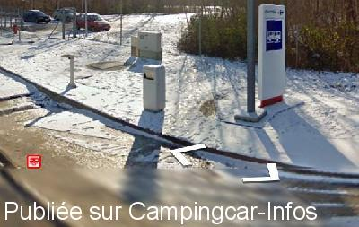

AA = Aire de services sur autoroute de :
A.5 Paris=>Langres LES JONCHETS Grande PAROISSE
(N° 69)
Accès/adresse :
A 5
Aire Les Jonchets La Grande Paroisse
Sens Paris/Langres
Km 30
Aire Les Jonchets La Grande Paroisse
Sens Paris/Langres
Km 30
Latitude : (Nord) 48.42557° Décimaux ou 48° 25′ 32′′
Longitude : (Est) 2.92743° Décimaux ou 2° 55′ 38′′
Tarif :
Services :


Autres informations :

Le 09/02/2016 par Aire de services
Aucun commentaire pour le moment